The majority of my paintings are done with watercolor and acrylic paint. Many of my paintings are inspired by nature and outdoor landscapes. Friends, family, and I take pictures during various vacations, trips, and nature walks, which usually act as reference photos for my art.
Nature is one of my favorite themes, but I also enjoy experimenting with new subjects and painting a variety of different scenes.
Please feel free to explore the galleries of my work below!
Watercolor Paintings
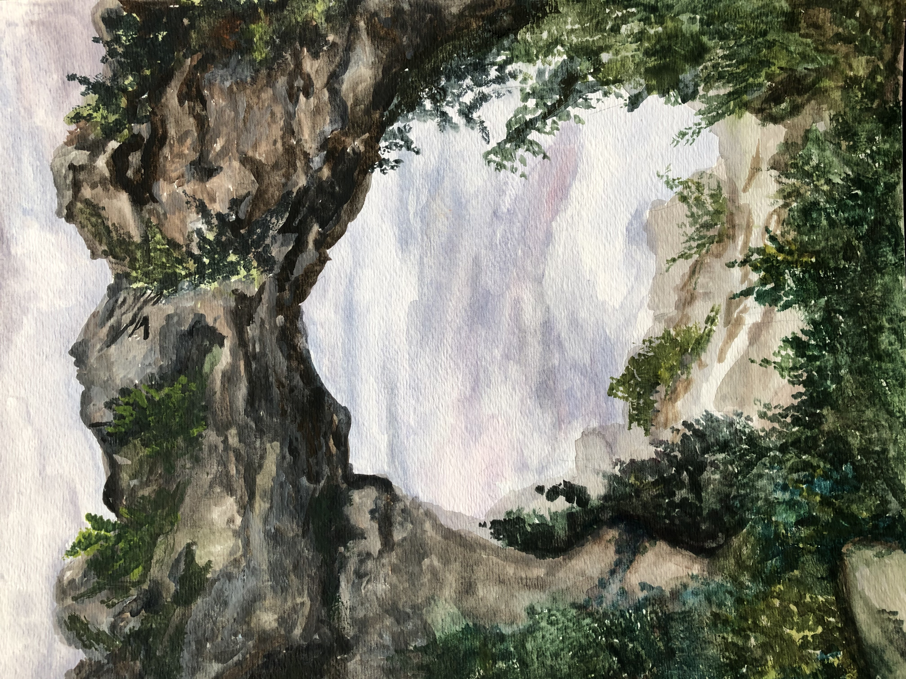
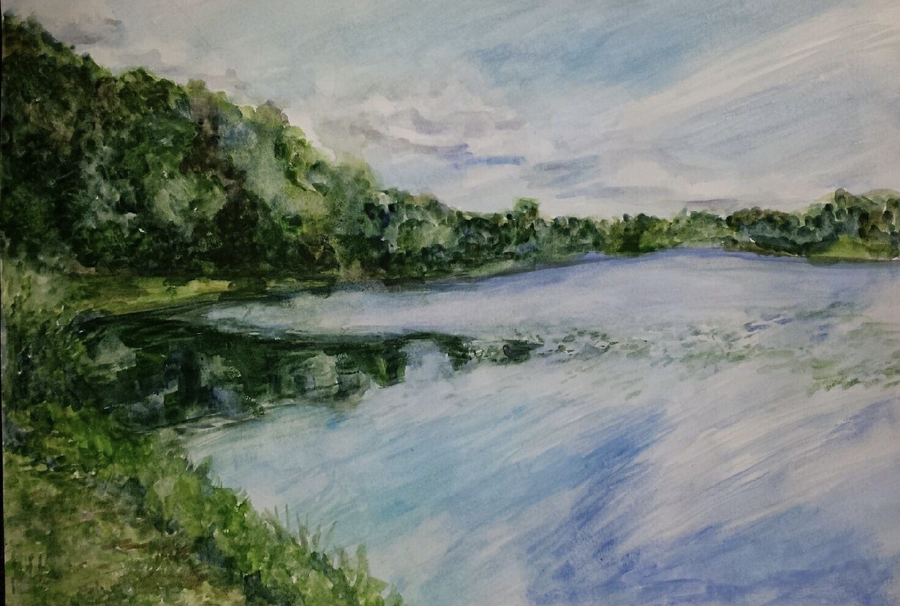
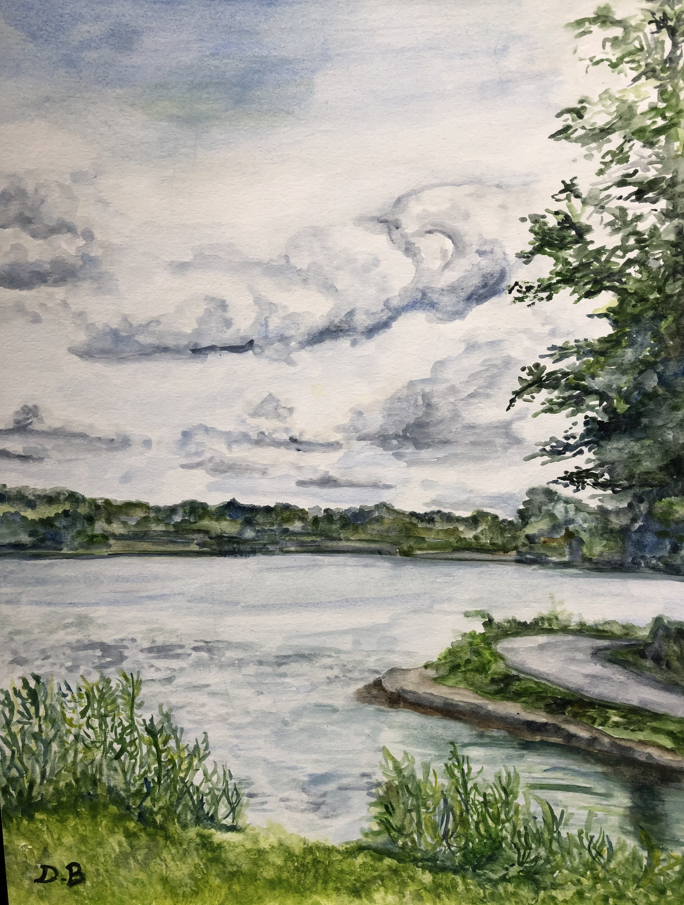

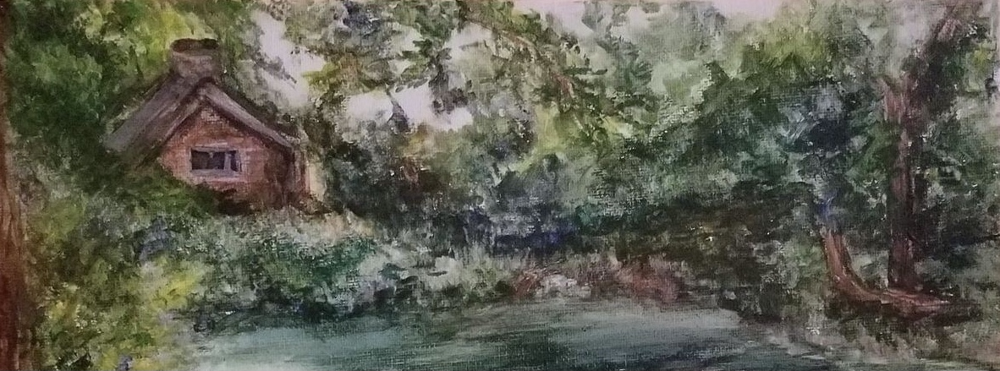
Acrylic Paintings
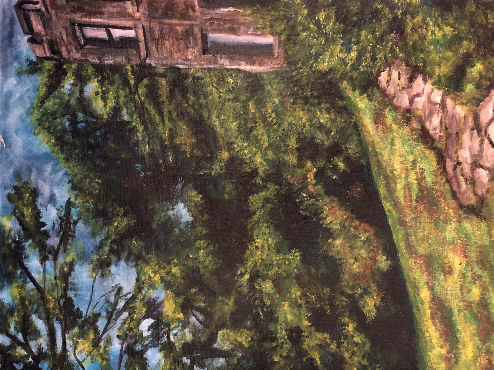
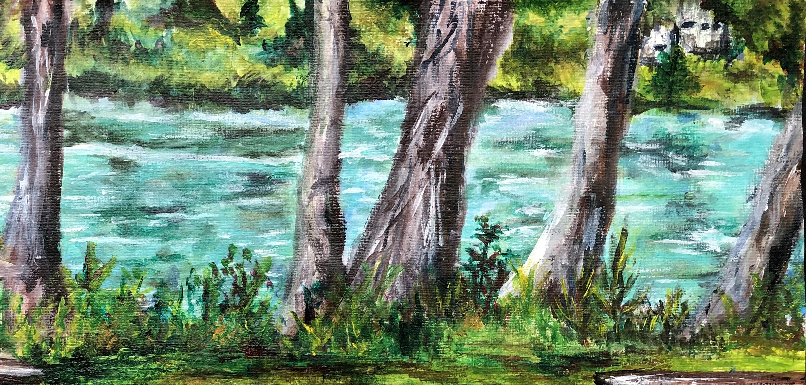
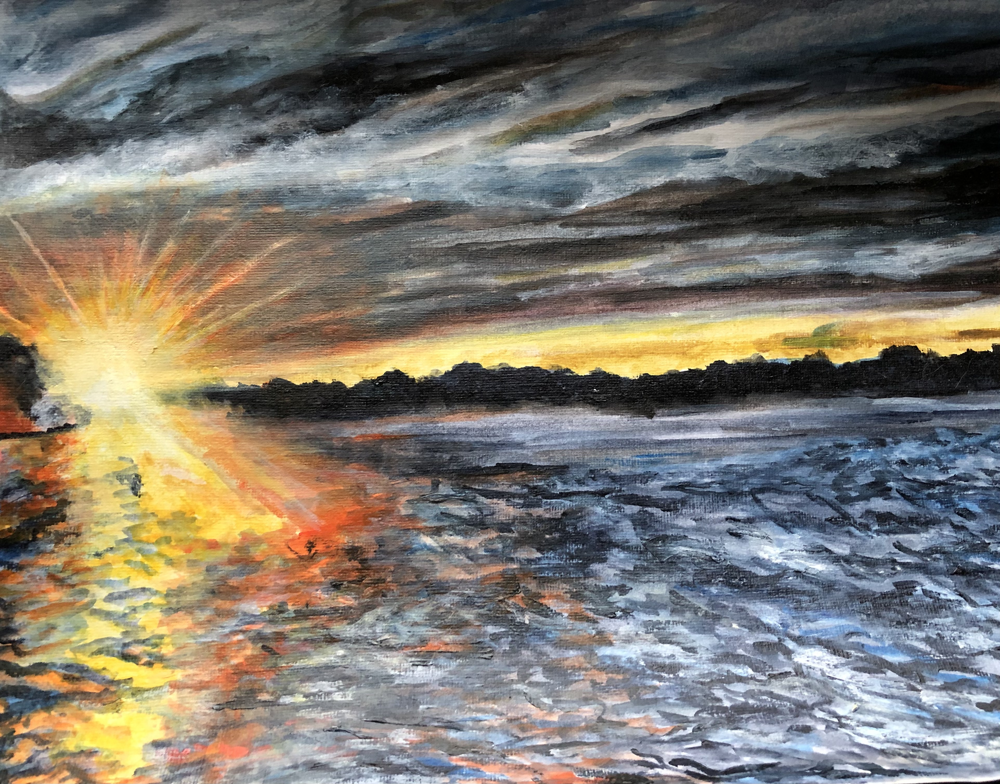
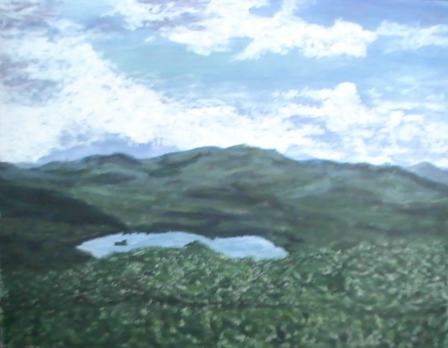
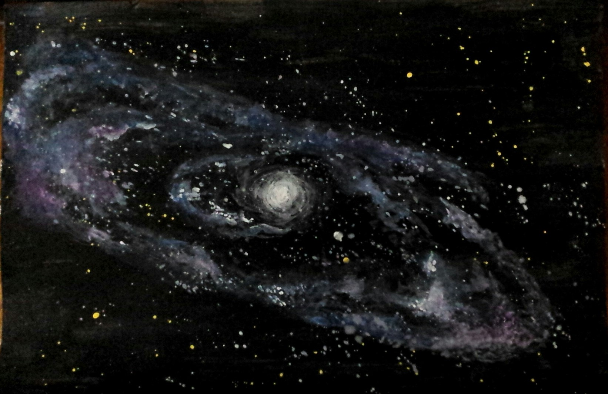
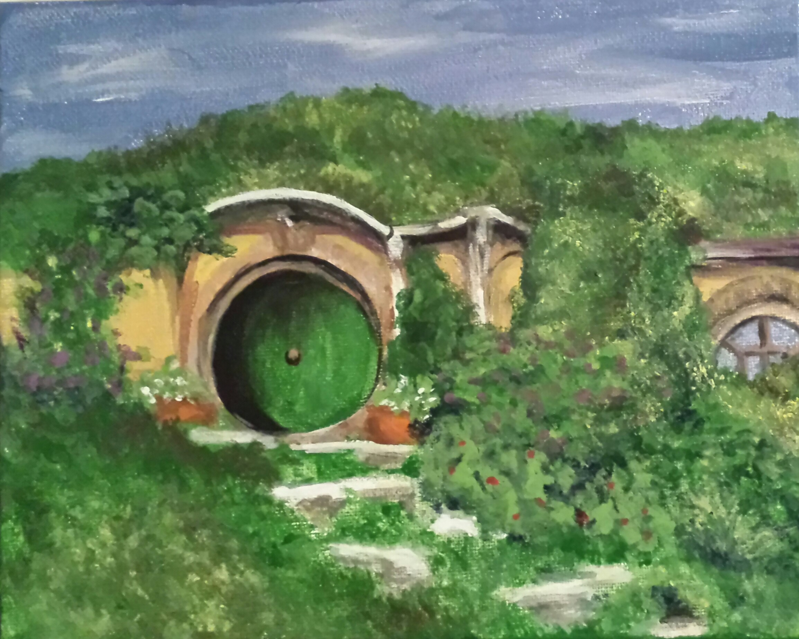
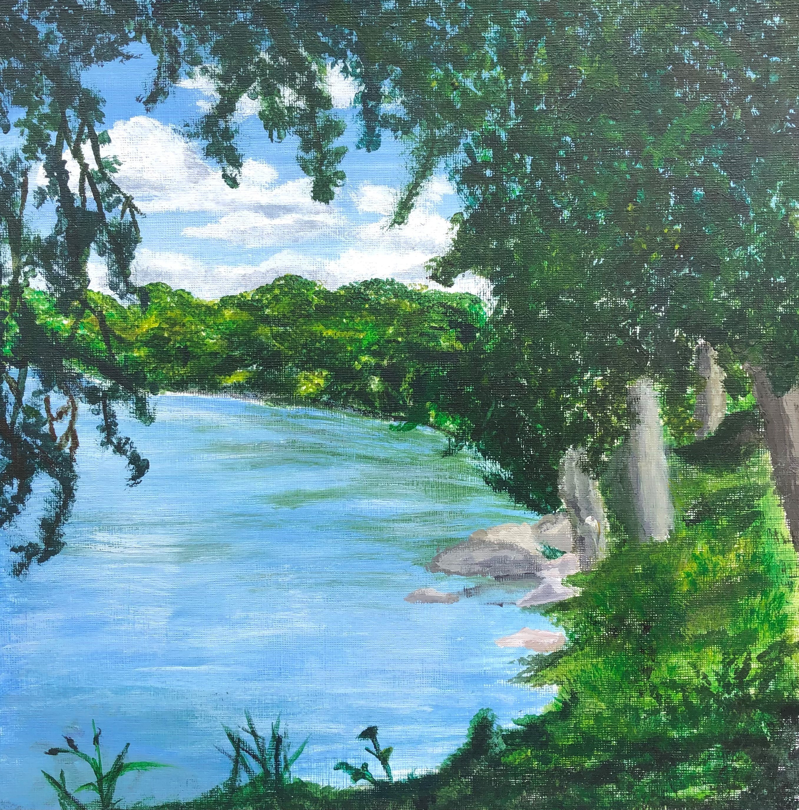
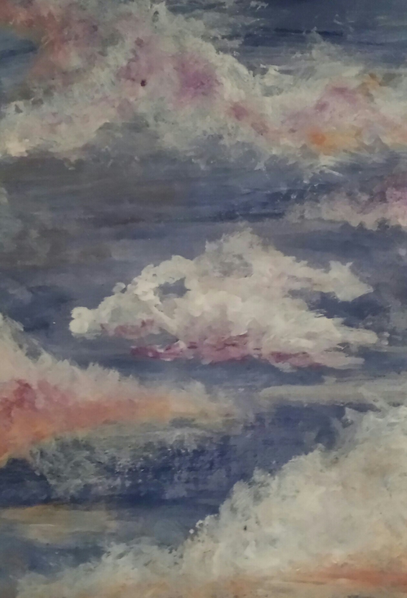
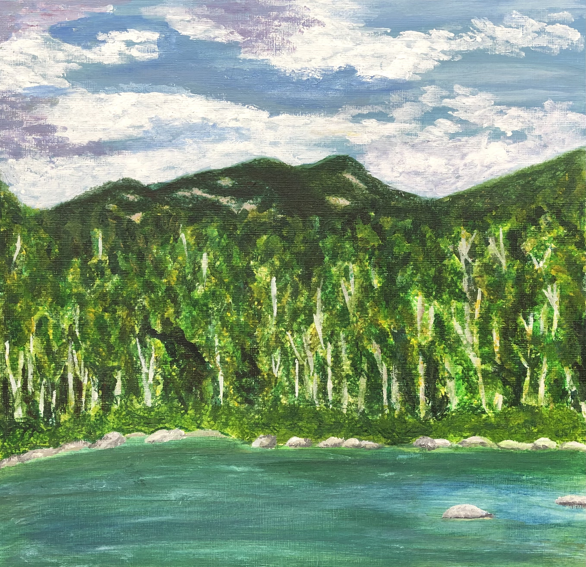